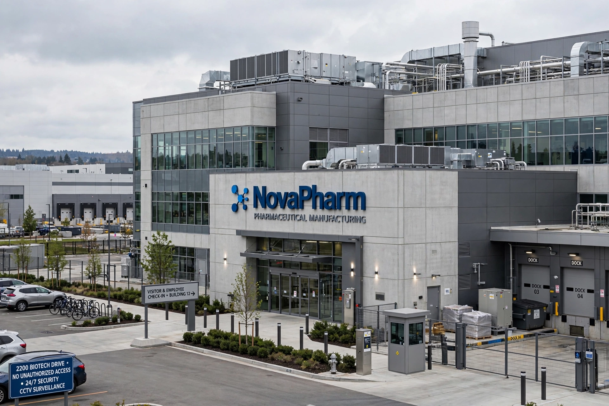

Mylan N.V. was a global generic and specialty pharmaceuticals company founded in 1961 in White Sulphur Springs, West Virginia, United States. For decades it was one of the world's largest producers of generic medicines and was best known to the public as the maker of the EpiPen auto-injector. In November 2020 Mylan merged with Pfizer's Upjohn division to form Viatris, ending Mylan as an independent company.

Mylan grew from a small West Virginia distributor into a global generics giant.
| Mylan N.V. | |
| Founded | 1961, White Sulphur Springs, West Virginia |
|---|---|
| Founders | Milan Puskar, Don Panoz |
| Defunct | 16 November 2020 (merged into Viatris) |
| Headquarters | Canonsburg, Pennsylvania; Hatfield, England |
| Industry | Pharmaceuticals (generics) |
| Key product | EpiPen |
| Notable CEO | Heather Bresch (2012-2020) |
Mylan began as a drug distributor founded by Milan "Mike" Puskar and Don Panoz and began manufacturing its own generic drugs in the 1970s. After going public, it grew aggressively through acquisitions, including India's Matrix Laboratories (2007), the generics business of Merck KGaA (2007), Abbott's non-US generics business (2015) and Sweden's Meda (2016). The company reincorporated in the Netherlands in a controversial 2015 tax inversion while retaining operational headquarters near Pittsburgh.
Mylan acquired the rights to the EpiPen epinephrine auto-injector in 2007 and raised the US price of a two-pack from about $100 to more than $600 by 2016. The increases provoked Congressional hearings, public outrage and legal settlements; Mylan paid $465 million to settle US government claims that it had misclassified EpiPen under Medicaid, and launched a cheaper authorised generic.
In 2019 Pfizer announced that its off-patent brands division, Upjohn, would spin off and combine with Mylan. The deal closed on 16 November 2020, creating Viatris, one of the world's largest generic drug makers.